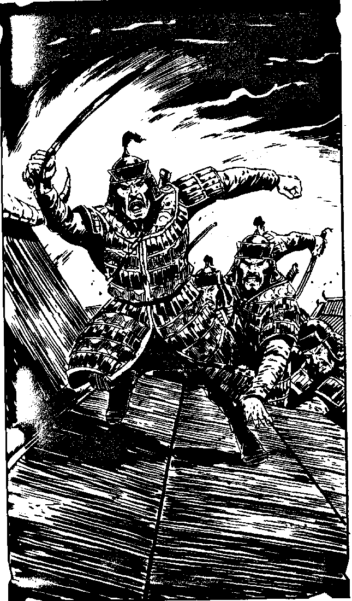

189
You roll onto the balcony as a hand-axe, thrown by one of the Imperial Guard tangles itself in the silken awning behind you. You leap from the balcony to the edge of the palace roof, swinging your arms and pulling your legs up over the edge as the guardsmen rush onto the balcony behind you. Thinking quickly, you activate the flyer's Homing Beacon which you keep in your hand as you run round the edge of the roof, away from the guardsmen who are now helping each other onto the roof's lacquered wooden slats. The flyer approaches but you must stand still now, to avoid confusing the flyer's computer. Some of the mongols, shouting ferociously, will be upon you before you can climb aboard. Balancing on the edge of the roof and mentally exhausted, you are forced to use your blaster. Make an Attack Roll.
| 5,6,7,8,9,10,11,12 | Turn to 296 |
| 2,3,4 | Turn to 175 |